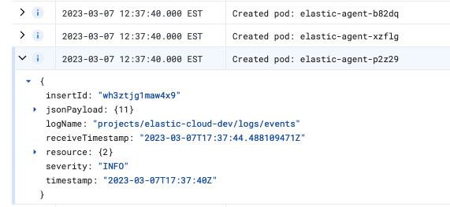

Getting started: Monitor your Kubernetes infrastructureedit
This guide demonstrates how to use the Elastic Kubernetes integration to observe your Kubernetes infrastructure. You’ll set up an Elastic Cloud deployment, where most of the configuration happens automatically. You’ll then learn how to monitor your Kubernetes logs and metrics to proactively detect issues in your cluster.
In this tutorial, you’ll deploy the Elastic Stack, install an Elastic Agent on your host to collect logs and metrics, and visualize information from those collected logs and metrics.
Prerequisitesedit
To get started, you need:
- An internet connection and an email address for your Elastic Cloud trial
- An active Kubernetes cluster.
-
The
kube-state-metrics(KSM) service deployed on your Kubernetes cluster.
If you don’t already have the KSM service deployed, you can follow these steps to set it up (more detailed instructions can be found on the main page of the KSM service repository):
- Check that your Kubernetes cluster is version 1.8 or higher. If not, refer to the Kubernetes Deployment section of the the KSM service readme for instructions.
-
If you are using Google Kubernetes Engine (GKE), your GCP identity must have the
cluster-adminrole. If it isn’t assigned already, you can assign the role by running:kubectl create clusterrolebinding cluster-admin-binding --clusterrole=cluster-admin --user=$(gcloud info --format='value(config.account)')
-
Clone the
kube-state-metricsrepository to a local directory:git clone git@github.com:kubernetes/kube-state-metrics.git
-
Change directories into the cloned repository:
cd kube-state-metrics
-
Deploy the project to your Kubernetes cluster:
kubectl apply -f examples/standard
The results should be like the following:
clusterrolebinding.rbac.authorization.k8s.io/kube-state-metrics created clusterrole.rbac.authorization.k8s.io/kube-state-metrics created deployment.apps/kube-state-metrics created serviceaccount/kube-state-metrics created service/kube-state-metrics created
-
To test that the KSM service is running, run the following command to expose the service:
kubectl port-forward svc/kube-state-metrics -n kube-system 8080:8080
The result should be:
Forwarding from 127.0.0.1:8080 -> 8080 Forwarding from [::1]:8080 -> 8080
-
Now, open up a web browser to address
localhost:8080/metrics. If things are working properly, you will see a flow of metrics data from your cluster.
With the prerequisites out of the way, you’re ready to get started!
Step 1: Create an Elastic Cloud deploymentedit
If you’ve already signed up for a trial deployment you can skip this step.
An Elastic Cloud deployment offers you all of the features of the Elastic Stack as a hosted service. To test drive your first deployment, sign up for a free Elastic Cloud trial:
- Go to our Elastic Cloud Trial page.
-
Enter your email address and a password.

-
After you’ve logged in, you can create a deployment. Give your deployment a name and select Create deployment.

-
While the deployment sets up, make a note of your
elasticsuperuser password and keep it in a safe place. - Once the deployment is ready, select Continue. At this point, you access Kibana and a selection of setup guides.
Step 2: Open the integration guideedit
-
Choose the Monitor Kubernetes clusters card. The guide opens on the first step.
-
In the guide, on the Add data tab, select Start. The Elastic Kubernetes integration page opens.
-
Select Add Kubernetes, and you’re ready to add your first integration.
Step 3: Install Elastic Agent on your clusteredit
The Elastic Kubernetes integration uses Elastic Agent, a single, unified way to add monitoring for logs, metrics, and other types of data to a host. It can also protect hosts from security threats, query data from operating systems, and more. A single agent makes it easy and fast to deploy monitoring across your infrastructure. Each agent has a single policy (a collection of input settings) that you can update to add integrations for new data sources, security protections, and more.
Your new Elastic Cloud deployment includes a pre-configured instance of Fleet Server, which manages the Elastic Agents that you can use to monitor a host system, in this case your Kubernetes cluster.
- On the Ready to add your first integration? page, select Install Elastic Agent.
-
Follow the steps in the guide to configure and enroll Elastic Agent in Fleet:
-
Download the provided manifest file or copy the text to a new file in a local directory. The file should be named
elastic-agent-managed-kubernetes.yml. -
From the directory with the manifest file, run the apply command:
kubectl apply -f elastic-agent-managed-kubernetes.yml
The result should be:
daemonset.apps/elastic-agent created clusterrolebinding.rbac.authorization.k8s.io/elastic-agent created rolebinding.rbac.authorization.k8s.io/elastic-agent created rolebinding.rbac.authorization.k8s.io/elastic-agent-kubeadm-config created clusterrole.rbac.authorization.k8s.io/elastic-agent created role.rbac.authorization.k8s.io/elastic-agent created role.rbac.authorization.k8s.io/elastic-agent-kubeadm-config created serviceaccount/elastic-agent created
-
Download the provided manifest file or copy the text to a new file in a local directory. The file should be named
-
In the integration setup guide, wait for confirmation that Elastic Agent is enrolled in Fleet. This can take a few minutes.
You can also view the status of your Elastic Agents at any time by navigating in Kibana to the Fleet page. Our test Kubernetes cluster has three nodes, so three Elastic Agents are configured.
You can also check the status of your the Elastic Agents in your Kubernetes cluster by running the
get podscommand:kubectl -n kube-system get pods -l app=elastic-agent
Once the Elastic Agents are up and running, the result should be:
NAME READY STATUS RESTARTS AGE elastic-agent-b72dp 1/1 Running 0 3m35s elastic-agent-p2t39 1/1 Running 0 3m35s elastic-agent-xmfhg 1/1 Running 0 3m35s
Your Kubernetes cluster logs should also show that the Elastic Agent pods were created successfully. Filter by
elastic-agentto see just the applicable logs:
In case you have problems, you can check the troubleshooting steps provided in the setup guide. The Kubernetes logs and the get pods command can also be useful for diagnosing any issues.
In the event of any memory-related errors, you might need to adjust resource limits of the Elastic Agent container in the elastic-agent-managed-kubernetes.yml manifest file, to increase the default memory values under resources: limits and resources: requests. Container resource usage depends on the number of data streams and the environment size.
Step 4: Add the Elastic Kubernetes integrationedit
- Select Add the integration.
-
Choose the type of metrics and logs that you want to monitor. If you like, you can leave all of the defaults for now and adjust these settings later to suit your needs.

Step 5: View your Kubernetes dataedit
-
Select Confirm incoming data. Wait a moment for the Elastic Agent policy to save, and then the Kubernetes integration setup guide opens on the second step.
-
In the guide, on the Explore Kubernetes metrics and logs tab, select Start. The Kibana [Metrics Kubernetes] Cluster Overview dashboard opens.
You can use the dashboard filters to drill down to a specific cluster or namespace. You can also filter the time period for the metrics to any range, either absolute or relative to the current time.
-
On the Kubernetes Dashboards [Metrics Kubernetes] card, try out some of the other dashboards that are available.
For example, on the Kubernetes Pods dashboard, the default visualizations capture the pods status, CPU usage, memory usage, and network traffic:
On the Kubernetes Deployments dashboard, you can view all deployments and replicas: desired, available, unavailable, and updated.
-
On the Elastic banner, select Setup guide: step 2. The guide opens on the second step.
- Since you’ve now tried out a few Kibana dashboards, select Mark done.
- Under the Tour Elastic Observability tab, select Start to learn more about Elastic Observability. The remaining steps in the setup guide will introduce you to additional features for monitoring your Kubernetes cluster logs and metrics data, to help you better assess your cluster’s performance over time.
You have now successfully configured monitoring for your Kubernetes infrastructure using the Elastic Kubernetes integration! To learn more about the Elastic Kubernetes integration, check the Kubernetes integration documentation.
What’s next?edit
Learn more about Elastic Observability
- Take your investigation to a deeper level! Use Elastic Observability to unify your logs, metrics, uptime, and application performance data.
- Are your eyes tired from staring at a wall of screens? Create alerts and find out about problems while sipping your favorite beverage poolside.
- Got everything working as you want it? Roll out your agent policies to other hosts by deploying Elastic Agents across your infrastructure!
Learn about other Elastic solutions and features
- Want to add search to your website, applications, or organization data? Try out Enterprise Search.
- Want Elastic to do the heavy lifting? Use machine learning to detect anomalies.
- Want to protect your endpoints from security threats? Try Elastic Security. Adding endpoint protection is just another integration that you add to the agent policy!